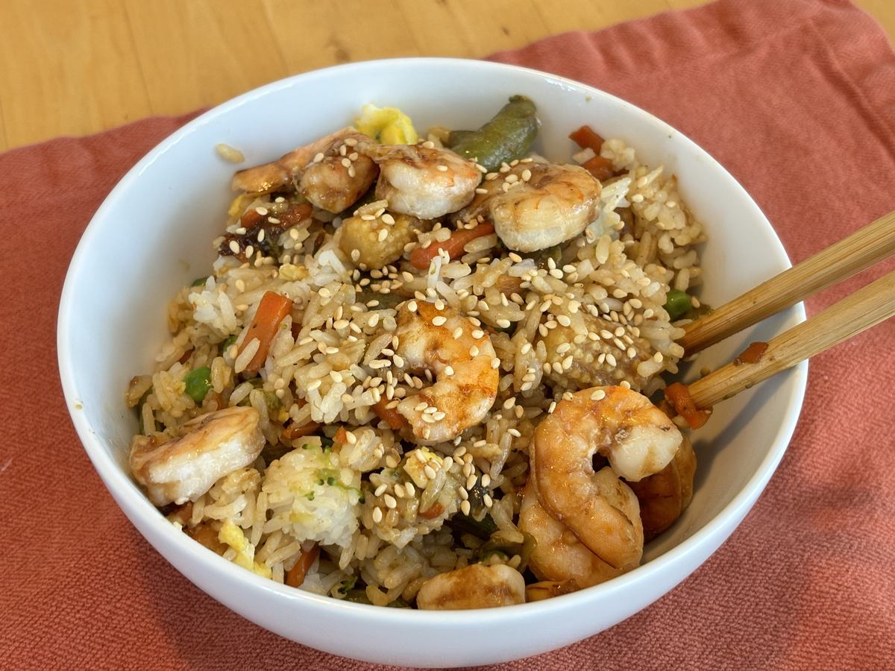

Based on http://www.geniuskitchen.com/recipe/chinese-fried-rice-38748, https://www.loveonaplate.net/hoisin-fried-rice/#wprm-recipe-container-5520, and https://www.cookwell.com/recipe/restaurant-style-chicken-fried-rice
Personal rating: 4 / 5

Combine:
bean sprouts
Add the rice, soy sauce, Sriracha, sugar, and other seasonings and mix well
Mix in the eggs and optional toppings (green onion, beans sprouts, etc)